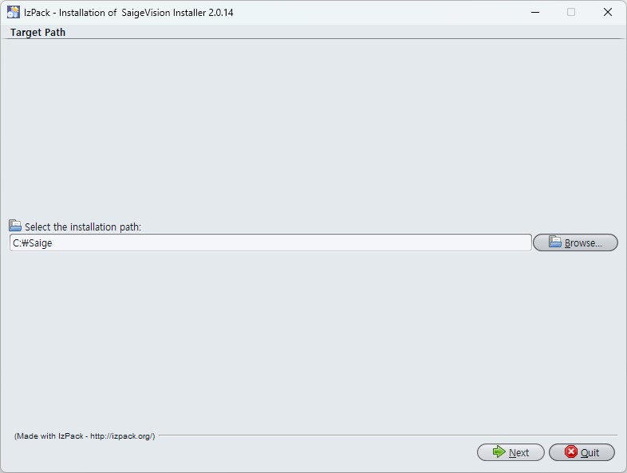
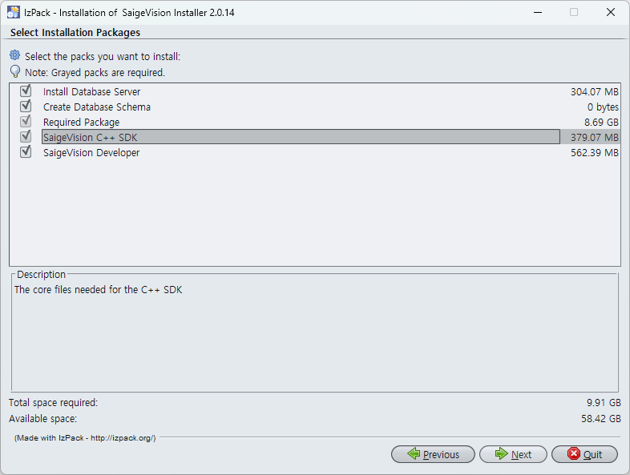
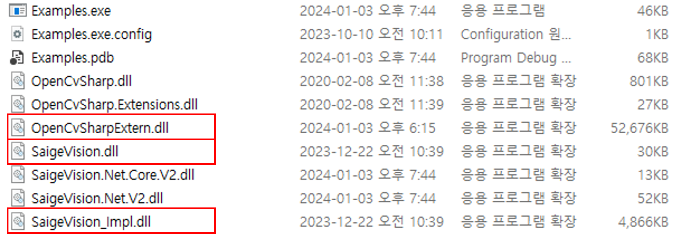
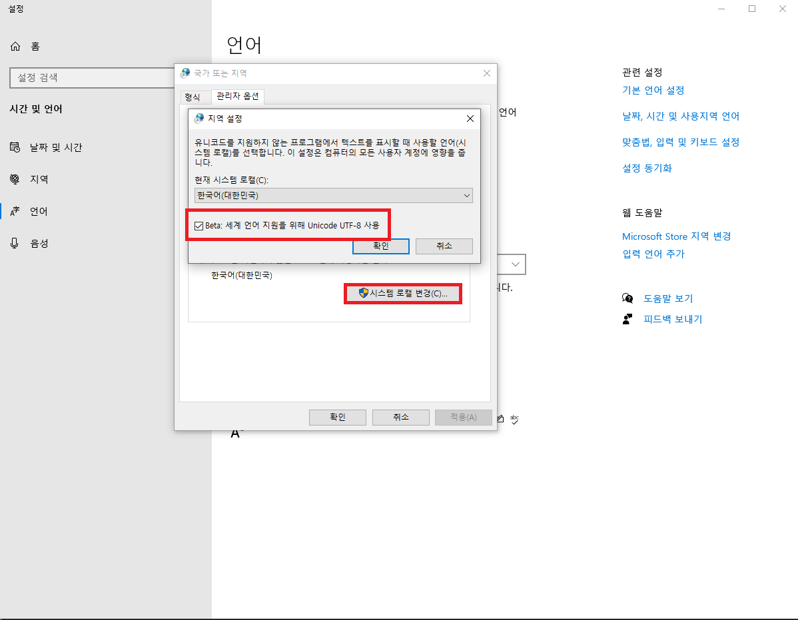

시작하기
SaigeVision Runtime C# SDK를 설치하여 Visual Studio 프로젝트에서 사용하거나 예제 프로젝트를 실행해 보세요.
최소 및 권장 시스템 사양
| 항목 | 최소 사양* | 권장 사양 |
|---|---|---|
| OS | Windows 10 64bit | |
| CPU | Intel Core i7 | |
| RAM | 16GB | 32GB |
| GPU | GeForce RTX 2060 6GB | GeForce RTX 3090 24GB |
준비물
- SaigeVision Installer
- NVIDIA Windows Driver 471.96 참고
- SaigeVision 라이센스 동글
- .Net Framework 4.6.1 (.Net Framework 4.7.2, .Net Standard 2.0)
설치
SaigeVision Installer를 이용해 SaigeVision을 설치해 주세요. 동봉된 설치 가이드를 참고하시기 바랍니다.
Note
환경 변수
SaigeVision Installer를 실행하면 처음에 설치 경로를 지정해야 합니다. 설치가 잘 마무리되면 이때 지정한 설치 경로가 SAIGE_HOME이라는 환경 변수로 자동 설정됩니다.

Note
설치 옵션
SaigeVision 설치 과정에서 Runtime SDK는 반드시 설치되는 반면, Developer는 설치 여부를 선택할 수 있습니다. 목적에 따라 Runtime SDK만 설치하거나 Developer까지 함께 설치해 주세요.

SaigeVision Installer를 통해 설치된 Runtime SDK 관련 항목은 아래와 같습니다.
| 항목 | 위치 |
|---|---|
| .Net Dynamic Library - SaigeVision.Net.V2.dll - SaigeVision.Net.Core.V2.dll - OpenCvSharp.dll - OpenCvSharp.Extensions.dll |
{설치 경로}\SaigeVision\csharp\bin\(.netframework_version) |
| Engine Dynamic Library - SaigeVision.dll - SaigeVision_Impl.dll - OpenCvSharpExtern.dll |
{설치 경로}\SaigeVision\csharp\bin |
| API Documentaion - docs |
{설치 경로}\SaigeVision\csharp\docs |
| Examples Project | {설치 경로}\SaigeVision\csharp\Examples |
Visual Studio 프로젝트에서 사용하기
Visual Studio 프로젝트 설정
SaigeVision Runtime C# SDK를 Visual Studio 프로젝트에서 사용하기 위해서는 아래 과정을 거쳐야 합니다. 설치 과정을 문제없이 거쳐 환경 변수가 올바르게 설정되었다고 가정합니다.
- 타깃 플랫폼을
x64로 지정합니다. {설치 경로}\SaigeVision\csharp\bin폴더 내에SaigeVision.Net.V2.dll,SaigeVision.Net.Core.V2.dll두 DLL 파일을 프로젝트에서 참조에 추가합니다.
필요에 따라OpenCvSharp.dll,OpenCvSharp.Extensions.dll또는System.Drawing.Common.dll파일을 참조해 줍니다.

{설치 경로}\SaigeVision\csharp\bin폴더 내에SaigeVision.dll,SaigeVision_Impl.dll,OpenCvSharpExtern.dll세개의 DLL 파일을 프로그램이 실행되고 있는 동일한 경로에 Copy&Paste 합니다.

예제 프로젝트 빌드 및 실행하기
예제 프로젝트에는 Visual Studio 프로젝트 설정에서 안내한 사항이 모두 적용되어 있습니다. 설치 과정만 잘 마쳤다면 아래 설명을 따라 SaigeVision 예제를 빌드하고 실행해 볼 수 있습니다.
빌드
Visual Studio 솔루션 파일 {설치 경로}\SaigeVision\csharp\Examples\Examples.sln을 실행해 주세요.
Warning
.Net Framework 4.6.1 을 지원합니다. PC에 설치되어 있지 않는 경우 .Net framework 4.6.1 개발자 팩을 다운받아 설치 진행합니다
사용하는 환경에 따라 .Net Framework 4.7.2, .Net Standard 2.0 버전으로도 사용가능합니다
빌드 타깃은 다음과 같이 지정해 주세요.
- 구성:
Debug또는Release - 플랫폼:
x64
빌드에 성공하면 Examples\bin\{Debug 또는 Release} 경로에 실행파일 Examples.exe이 생성됩니다.
실행
빌드된 예제는 두 가지 방법으로 실행할 수 있습니다.
- Visual Studio에서
디버깅 시작(단축키F5) 또는디버그하지 않고 시작(단축키Ctrl + F5)을 이용하여 예제 애플리케이션을 실행합니다.
예제 프로젝트를 실행하면 원하는 예제를 선택하여 추론 작업을 수행해 볼 수 있습니다.
예제 코드 안내
Examples 프로젝트의 소스 파일에서 각 예제의 코드를 모두 확인할 수 있습니다. 코드를 자유롭게 수정하면서 원하는 대로 SaigeVision 추론 기능을 사용해 보세요. 모든 예제 코드에 기본적인 사용법이 주석으로 작성되어 있으니 참고하시기 바랍니다.
SaigeVision 추론 기능 사용을 위한 상세 안내는 개발가이드와 API 레퍼런스를 확인해 주세요.
예제 프로그램 안내
예제 프로그램을 통하여 검사에 대한 정보와 검사 결과를 함께 확인할 수 있습니다.

- 공통 경로 설정 및 검사 시간을 확인합니다.
- 모델과 이미지 선택 후 버튼 클릭을 통하여 추론을 실행합니다.
- 검사한 이미지가 결과와 함께 LIST로 확인합니다.
- 검사 결과에 대한 상세 정보를 확인합니다.
- 검사 결과 이미지를 확인할 수 있습니다. (ex. 원본이미지, heatmap 등)
- 검사 결과 이미지를 확인할 수 있습니다.
에러 처리 방식
거의 모든 SaigeVision API가 에러 발생 시 Exception 이 발생됩니다.
에러 메세지에는 어떤 에러인지 설명하는 문자열이 적혀있습니다.
예외가 발생할 경우 상황에 따라 각기 다른 패턴으로 예외를 처리합니다. 각 API 함수의 예외 처리 방식은 다음과 같습니다.
| API | 처리 방식 |
|---|---|
Constructor (생성자) |
객체가 생성되어 있으면 파괴하고 애플리케이션을 종료합니다. |
OptimizeInferenceHandle GetModelInfo |
예외를 catch 로 작업합니다. 추론 작업을 진행하는 데는 문제가 없기 때문에 계속 실행합니다. |
Inspection |
현재 이미지를 스킵하고 다음 이미지 추론으로 넘어갑니다(for 문 안에서 continue) |
GetResult(s) |
객체를 해제하고 애플리케이션을 종료합니다. |
유의 사항
생성자에서
batch size를 적절하게 생성해야 합니다. (기본값: 1)batch size보다 이미지 사이즈가 큰 경우 에러가 발생합니다.engine객체는 애플리케이션 내에서 '단 한번' 호출 하는 것을 권장합니다.engine객체 사용이 종료되면Dispose패턴을 통하여 항상 메모리를 해제시켜주시길 바랍니다.이미지 경로에 오류가 있는 경우에 대해서는 예외 처리가 잘 되어 있지 않습니다. 별도 메시지 없이 프로그램이 종료될 수 있습니다.
예제에서 한글이 포함된 이미지 경로를 읽어 오는 코드가 유니코드 UTF-8만 인식하도록 작성되어 있습니다. 한글 경로로 인한 문제가 발생할 경우 아래 순서대로 따라해 보신 뒤 다시 예제를 실행해 주시기 바랍니다.
언어->기본 언어 설정->시스템 로캘 변경으로 들어갑니다.- 하단의
Beta: 세계 언어 지원을 위해 Unicode UTF-8 사용체크박스를 체크한 뒤확인버튼을 누릅니다. - 안내에 따라 시스템을 재부팅합니다.

(중요) 적절한 NVIDIA Driver 버전 및 설정
NVIDIA 그래픽 드라이버의 버그 내지는 사이드이펙트로 검사 시간이 비정상적으로 늘어나는 경우가 있습니다. 따라서 다음 가이드에 따르기를 권장합니다.
- NVIDIA GeForce RTX 30 시리즈 이하: 471.96 link
- NVIDIA GeForce RTX 40 시리즈 이상: 515.15 이상 또는 최신버전
- NVIDIA 제어판 설정
- 저지연 모드: 켜기
- 전원 관리 모드: 최고 성능 선호